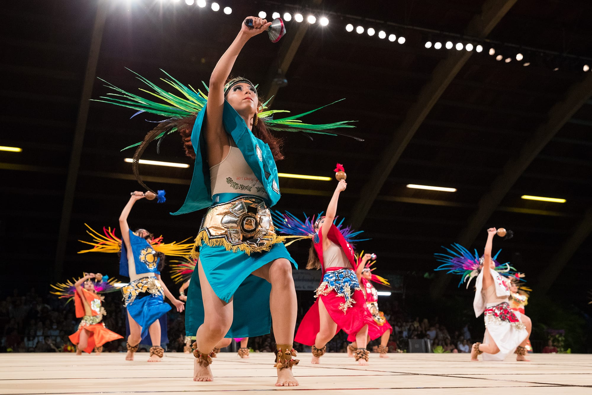
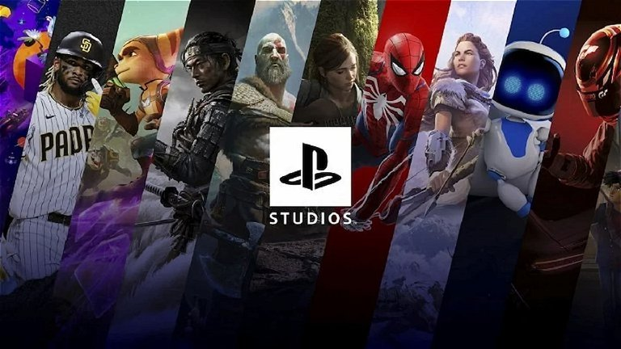
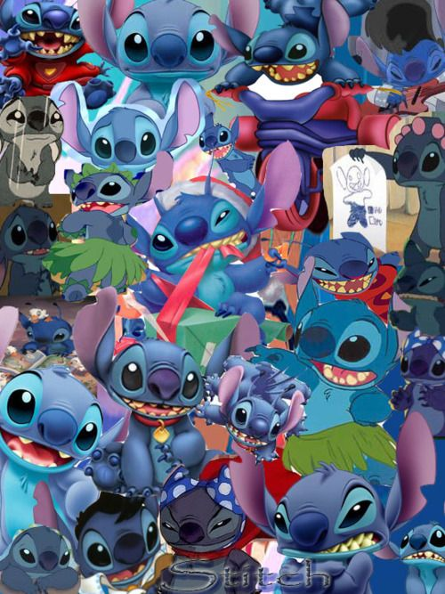

Hola, soy Montse
Estudiante de Ingeniería de Software
Actualmente estudio ingeniería de software, sin embargo, antes estudié la carrera de Técnico en Urgencias Médicas.
En mi tiempo libre me gusta salir, ver series y películas, jugar videojuegos, entre otras cosas.
En esta página te hablaré sobre algunos de mis gustos.
Intereses
Danza
Desde siempre, la danza ha sido una parte fundamental de mi vida. He explorado el ballet, el folclore y las danzas polinesias, siendo el hawaiano el que más me ha cautivado, habiéndolo practicado durante 9 años. Aunque sueño con aprender hip hop algún día, el folclore y el hawaiano siempre tendrán un lugar especial en mi corazón.
Gatos
Los gatos son mis animales favoritos. Me encanta su independencia, su elegancia y su ternura. Tengo dos gatos: Wicho, un gato negro, y Katy, una gata calico.
Videojuegos
Siempre me han gustado los videojuegos, pero fue hace dos años cuando comencé a jugar más intensamente. Mis favoritos son los juegos de aventuras y acción como Horizon, The Last of Us, Uncharted y Spiderman. Estos juegos no solo ofrecen una experiencia de juego inmersiva, sino que también cuentan con historias profundas y personajes inolvidables.
Cine y TV
Soy súper consumidora de películas y series, así como de animé. Algunas de mis películas favoritas incluyen 'Como si fuera la primera vez', una comedia romántica que me recuerda a mi mamá, y 'Zombieland', por mi amor por las películas de zombies. En cuanto a películas animadas, 'Lilo & Stitch' y 'Mulan' son mis preferidas. Entre las series, 'Breaking Bad', 'The Walking Dead' (antes de la "muerte/no-muerte" de Rick) y 'Friends' son algunas de las que más disfruto, esta última siendo un vínculo especial con mi infancia al verla con mis papás. Respecto al animé puedo decir que mi favorito es School Rumble.